처음 로그인부터
매일의 홈페이지 관리까지
필요한 항목을 목차에서 선택하고, 화면의 번호와 설명을 함께 보며 따라 해 보세요.
홈페이지 안에서 수정하는 방법과 관리자 화면에서 관리하는 방법을 함께 안내합니다.
최종 업데이트: 2026년 10월 30일. 캡처의 게시글·상담 내역은 가이드용 예시이며, 일부 캡처는 변경 전 화면입니다. 관리 목록·진열 수정·글 편집·캘린더 편집·팝업 편집·상담 목록·공통 정보·방문 통계는 현재 화면으로 갱신했습니다. 번호별 설명을 순서대로 따라 해 보세요. 운영 사이트에는 최신 버전 배포 후 반영됩니다.
처음이라면 여기부터 읽어 주세요
이 가이드는 마우스 왼쪽 버튼을 한 번 누르는 것을 ‘클릭’ 또는 ‘누르기’라고 설명합니다. 화면 아래가 보이지 않으면 마우스 가운데 바퀴를 아래로 굴립니다. 노트북은 터치패드 위에서 두 손가락을 아래로 움직이세요.
- 가이드와 관리자 화면을 함께 엽니다. 위의 관리자 로그인 링크를 누르면 인터넷 창 위쪽에 새 탭이 열립니다. 위쪽의 ‘홈페이지 운영 가이드’ 탭을 누르면 이 설명으로 돌아옵니다.
- 그림의 빨간 번호와 아래 설명을 맞춰 봅니다. 작은 글자가 안 보이면 그림을 한 번 누르세요. 원본 그림이 새 탭에 열립니다. 확인 후 가이드 탭을 다시 누릅니다.
- 입력란을 누르고 글자를 씁니다. 기존 글을 바꾸려면 입력란을 누르고 Windows는 Ctrl+A, Mac은 ⌘+A를 누른 뒤 새 내용을 입력합니다. 전체 선택은 현재 누른 입력란 안에서 사용하세요.
- 작은 네모는 선택 상자입니다. 한 번 누르면 체크가 생기고, 다시 누르면 없어집니다. ‘사이트’처럼 아래 화살표가 있는 상자는 눌러서 목록 중 하나를 고릅니다.
- 저장 후 성공 안내를 확인합니다. 글을 입력하거나 사진을 고르기만 하면 완료되지 않습니다. 저장 또는 적용을 누르고 완료 문구가 나올 때까지 기다립니다. 오류가 나오면 내용을 확인하고 다시 저장하세요.
하고 싶은 일로 바로 찾아가기
01
한국어·영문 사이트 관리
게시글, 캘린더 일정, 팝업의 ‘게시 대상 사이트’에서 한국어, 영문 또는 두 사이트를 선택합니다. 하나 이상 선택해야 저장할 수 있습니다. 기존 콘텐츠의 기본 대상은 한국어입니다.
상담 접수는 두 사이트에서 함께 수집됩니다. 목록, 상세 화면과 엑셀 파일에서 접수 사이트를 확인할 수 있습니다.
공통 정보 관리의 학원 정보는 한국어·영문 사이트별로 입력하고, SNS 링크는 두 사이트에서 함께 사용합니다. 사이트 헤더의 KOR / ENG로 언어를 전환할 수 있습니다. 관리자 메뉴 아래의 한국어 사이트 보기와 영문 사이트 보기는 각각 새 창으로 열립니다. 두 사이트를 모두 선택해 게시해도 제목과 본문이 자동 번역되지는 않으므로 입력한 내용을 각 사이트에서 확인하세요.
어느 사이트에 표시되나요?
| 설정 예시 | 방문자에게 보이는 곳 |
|---|---|
| 한국어만 선택 + 공개 | 한국어 사이트에만 표시 |
| 영문만 선택 + 공개 | 영문 사이트에만 표시 |
| 두 사이트 모두 선택 + 공개 | 한국어·영문에 같은 제목과 내용으로 표시 |
| 비공개 | 사이트 선택과 관계없이 방문자에게 보이지 않음 |
한국어와 영문 문구를 다르게 쓰려면 글을 각각 등록하세요. 한국어 글은 한국어 사이트만, 영어 글은 영문 사이트만 선택하면 됩니다. 팝업 이미지 안에 적힌 글도 자동 번역되지 않으므로 언어별 이미지가 다르면 각각 등록합니다.
02
관리자 로그인 방법
운영 사이트에서 로그인하면 관리자 페이지와 홈페이지 내 관리 버튼을 함께 사용할 수 있습니다.
- 홈페이지를 맨 아래까지 내려 푸터의 copyright(© 저작권 문구) 옆에 있는 로그인 아이콘을 누릅니다. 아이콘을 누르면 관리자 로그인 페이지로 이동합니다. 이 가이드의 관리자 로그인 링크로도 접속할 수 있습니다.
- 발급받은 관리자 아이디와 비밀번호를 입력하고 로그인합니다.
- 관리 화면에서 작업할 게시판을 선택합니다. 홈페이지에서 작업하려면 한국어 사이트 보기 또는 영문 사이트 보기를 누릅니다.
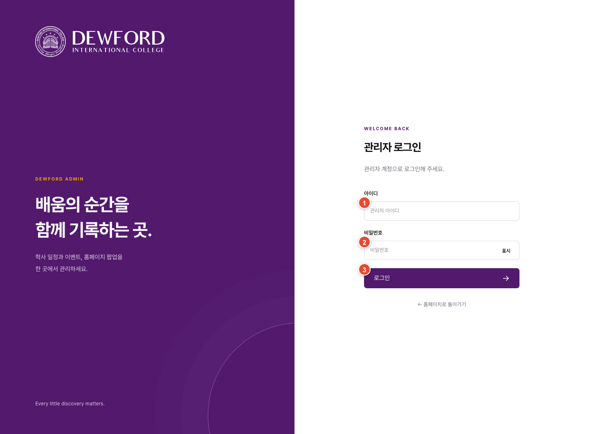
1아이디 입력란을 클릭하고 발급받은 아이디를 입력합니다.
2비밀번호를 입력합니다. 입력이 정확한지 확인하려면 표시 버튼을 누릅니다.
3로그인 버튼을 누릅니다. 성공하면 관리자 게시판 화면으로 이동합니다. 오류가 뜨면 입력값을 확인하고 다시 시도합니다.
푸터에서 로그인 페이지 열기
모든 페이지 맨 아래의 © 2026 DEWFORD INTERNATIONAL COLLEGE. All rights reserved. 옆에 있는 아래 모양의 아이콘을 찾으세요. 아이콘을 눌러 로그인 화면을 연 뒤 발급받은 아이디와 비밀번호를 입력합니다.
처음 접속하는 경우
브라우저 주소창에 운영 사이트 주소 뒤에 /admin-login.html을 붙여 엽니다. 현재 운영 주소는 dewford-re.rapda98.workers.dev/admin-login.html입니다. 로그인 후에는 같은 사이트 주소에서 홈페이지 관리 버튼을 사용할 수 있습니다. 컴퓨터의 HTML 파일을 직접 열어 작업하지 마세요.
03
관리자 페이지 사용방법
왼쪽 메뉴에서 관리 대상을 선택합니다. 모바일에서는 메뉴가 화면 상단에 표시됩니다.
| 메뉴 | 할 수 있는 작업 |
|---|---|
| 이벤트 게시판 | 행사 소식 등록·수정, 공개 설정, 순서 변경 |
| 유치부 캘린더 | 시작일·종료일과 캘린더 표시 색상을 지정해 유치부 일정 관리 |
| 초등부 캘린더 | 시작일·종료일과 캘린더 표시 색상을 지정해 초등부 일정 관리 |
| 팝업 관리 | 홈페이지 팝업 이미지와 노출 기간 관리 |
| 상담 접수 | 신청 확인, 상태 변경, 삭제, 엑셀 다운로드 |
| 공통 정보 관리 | 학원 기본 정보와 카카오톡·네이버 톡톡·인스타그램·페이스북 링크 변경 |
| 방문 통계 | 오늘·이번 달 요약, 일별 방문자, 페이지 조회수와 기기별 비율 확인 |
저장을 눌러야 등록·수정 내용이 반영됩니다. 업로드가 끝났더라도 저장하지 않고 창을 닫으면 변경이 완료되지 않습니다.
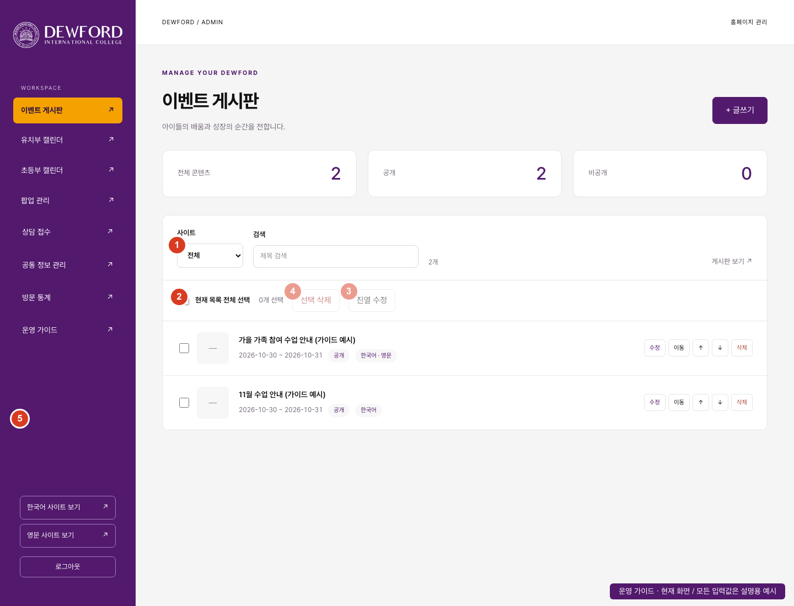
1사이트 상자를 눌러 전체·한국어·영문 중 하나를 고릅니다. 오른쪽 검색 입력란에 제목 일부를 적으면 목록이 좁혀집니다.
2현재 목록 전체 선택을 누르면 지금 표시된 항목의 네모에 모두 체크됩니다. 한 글만 바꾸려면 해당 행 왼쪽 네모만 누르세요.
3진열 수정은 선택한 항목을 어느 언어 사이트에 보여 줄지 한 번에 바꾸는 버튼입니다.
4선택 삭제는 체크된 항목을 지우는 버튼입니다. 잠시 숨기는 목적이라면 아래의 진열 수정 방법을 사용하세요.
5한국어 사이트 보기·영문 사이트 보기는 결과 확인용입니다. 새 탭이 열리면 내용을 보고 다시 관리자 탭으로 돌아옵니다.
사이트별 목록 확인과 선택 삭제
- 목록 위 사이트에서 전체·한국어·영문 중 하나를 선택합니다. 제목 검색과 캘린더 카테고리 필터도 함께 사용할 수 있습니다. 사이트 필터는 게시 대상 기준이므로 비공개 글도 목록에 포함될 수 있습니다.
- 각 행의 체크박스로 항목을 선택합니다. 현재 목록 전체 선택은 현재 필터와 검색에 표시된 항목을 모두 선택합니다. 조건을 바꾸면 선택이 해제되거나 목록에서 제외된 항목의 선택이 풀릴 수 있으므로 선택 개수를 다시 확인하세요.
- 선택 삭제를 누르고 확인 창의 개수를 확인합니다. 한 번에 최대 1,000개까지 삭제할 수 있으며 삭제한 항목은 관리자 화면에서 복구할 수 없습니다.
한국어·영문 사이트 진열 일괄 수정
이벤트·유치부 캘린더·초등부 캘린더·팝업 관리에서 사용할 수 있습니다. 글이나 팝업을 삭제하지 않고 사이트별 노출을 바꿀 때 사용합니다.
- 변경할 항목을 선택하고 진열 수정을 누릅니다. 한 번에 최대 1,000개까지 변경할 수 있습니다.
- 한국어 사이트와 영문 사이트 버튼을 눌러 진열할 사이트를 선택하거나 해제합니다. 두 버튼을 모두 선택하면 두 사이트에 표시되고, 모두 해제하면 두 사이트에서 진열이 내려갑니다.
- 설정이 서로 다른 항목을 함께 선택하면 모든 항목에 공통으로 진열 중인 사이트만 처음에 선택됩니다. 안내 문구를 확인하고 원하는 최종 상태를 지정하세요.
- 버튼을 변경한 후 적용을 누릅니다. 선택한 모든 항목의 사이트 설정이 버튼 상태와 같아집니다. 사이트를 하나 이상 선택하면 공개로, 둘 다 해제하면 비공개·미진열로 변경됩니다.
- 각 사이트 보기로 실제 표시를 확인합니다. 팝업은 진열 외에 팝업 사용과 노출 기간 조건도 충족해야 나타납니다.
등록과 수정을 구분하세요
새 소식은 글쓰기로 등록하고, 이미 올린 글의 오타나 사진을 바꿀 때는 그 글의 수정 버튼을 사용합니다. 같은 내용을 다시 글쓰기로 등록하면 기존 글이 바뀌는 것이 아니라 글이 한 개 더 생깁니다.
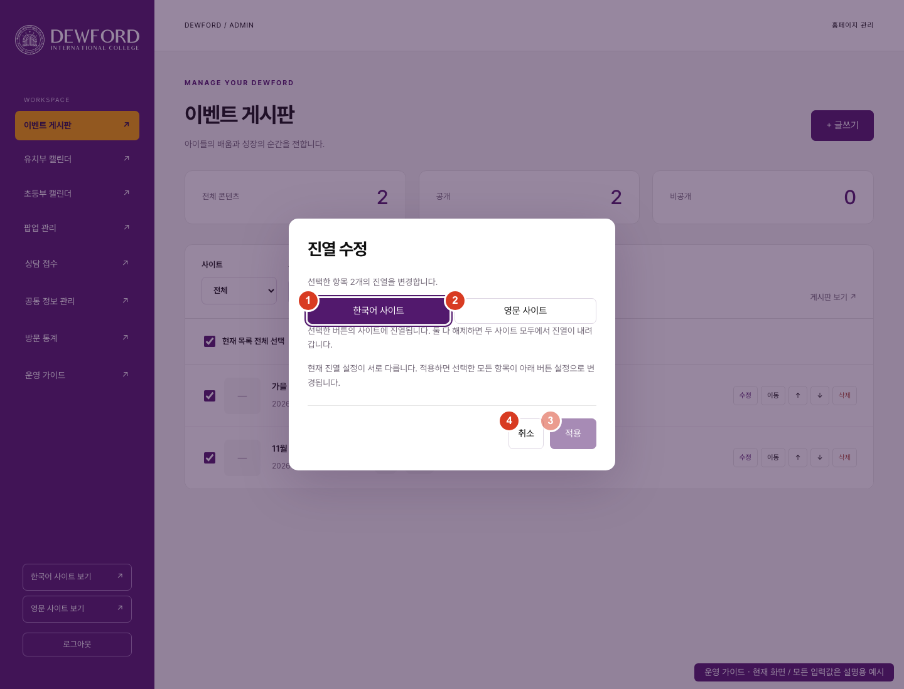
1한국어 사이트 버튼: 보라색이면 한국어에 진열합니다. 한 번 누를 때마다 선택·해제가 바뀝니다.
2영문 사이트 버튼: 영문에도 보이게 하려면 눌러 보라색으로 만듭니다. 두 사이트를 모두 보이게 하려면 두 버튼을 모두 보라색으로 둡니다.
3적용: 원하는 버튼 상태로 바꾼 후 누릅니다. 처음에는 비활성화되어 있으며 사이트 버튼을 변경하면 누를 수 있습니다. 선택한 모든 항목이 같은 설정으로 바뀝니다.
4취소: 이번 진열 변경을 저장하지 않고 창을 닫습니다.
따라 하기: 한국어 글 두 개를 두 사이트에 함께 보이게 하기
- 목록 왼쪽에서 바꿀 글 두 개의 네모를 누릅니다. 위에 ‘2개 선택’이 표시되는지 확인합니다.
- 진열 수정을 누릅니다. 한국어·영문 두 버튼을 모두 보라색으로 만듭니다.
- 적용을 누르고 관리자 목록에서 ‘공개’, ‘한국어 · 영문’ 표시를 확인합니다.
- 왼쪽 아래 두 사이트 보기를 각각 눌러 글이 보이는지 확인합니다. 같은 글이 두 언어로 자동 번역되는 기능은 아니므로 본문 문구도 읽어 보세요.
04
홈페이지 설명
홈페이지는 DEWFORD 소개, 교육 프로그램 안내, 입학상담, 행사 소식과 학사 일정으로 구성됩니다.
- 이벤트: 목록에서 글 제목이나 이미지를 누르면 상세 페이지를 볼 수 있습니다.
- 캘린더: 유치부·초등부 일정을 구분해 확인하며, 날짜를 선택하면 해당 날짜의 일정이 표시됩니다.
- 상담 신청: 홈, Contact, 입학상담 페이지의 양식이 같은 상담 접수함에 연결됩니다.
- 영상: 화면에 들어오면 음소거 자동 재생하고 반복 재생합니다. 화면 밖에서는 일시정지합니다.
방문자 화면과 관리자 화면의 차이
로그인하지 않은 방문자는 소식·일정·이미지와 상담 양식만 볼 수 있습니다. 관리자 로그인 후에는 같은 홈페이지에 글쓰기·수정 등 추가 버튼이 표시됩니다. 홈페이지에서 연 편집 창도 관리자 화면과 같은 저장 기능을 사용합니다. 관리 버튼이 보인다고 해서 방문자에게도 해당 버튼이 보이는 것은 아닙니다.
05
이벤트 게시판 글 등록 및 수정 방법
사이트 내에서 등록·수정
- 먼저 관리자 로그인 후 이벤트 페이지로 이동합니다.
- 목록 위의 글쓰기를 누릅니다. 기존 글은 해당 글의 수정을 누릅니다. 상세 페이지에서도 로그인하면 최근 소식 아래 관리 버튼을 사용할 수 있습니다.
- 편집 팝업에서 제목, 날짜, 목록 소개글, 내용, 대표 이미지와 추가 사진을 작성합니다.
- 공개 여부를 확인하고 저장합니다. 홈페이지에서 글과 이미지를 확인합니다.
관리자 페이지에서 등록·수정
- 이벤트 게시판 관리를 선택합니다.
- 새 글은 + 글쓰기, 기존 글은 목록의 수정을 누릅니다. 제목 검색으로 글을 찾을 수 있습니다.
- 내용과 사진을 편집하고 공개 여부를 설정한 뒤 저장합니다.
- 게시판 보기를 눌러 결과를 확인합니다.
내용 편집기는 글자 크기·색상·굵기·목록·정렬 등을 지원합니다. 대표 이미지는 목록과 상세 화면에, 추가 사진은 상세 화면의 이미지 갤러리에 사용됩니다.
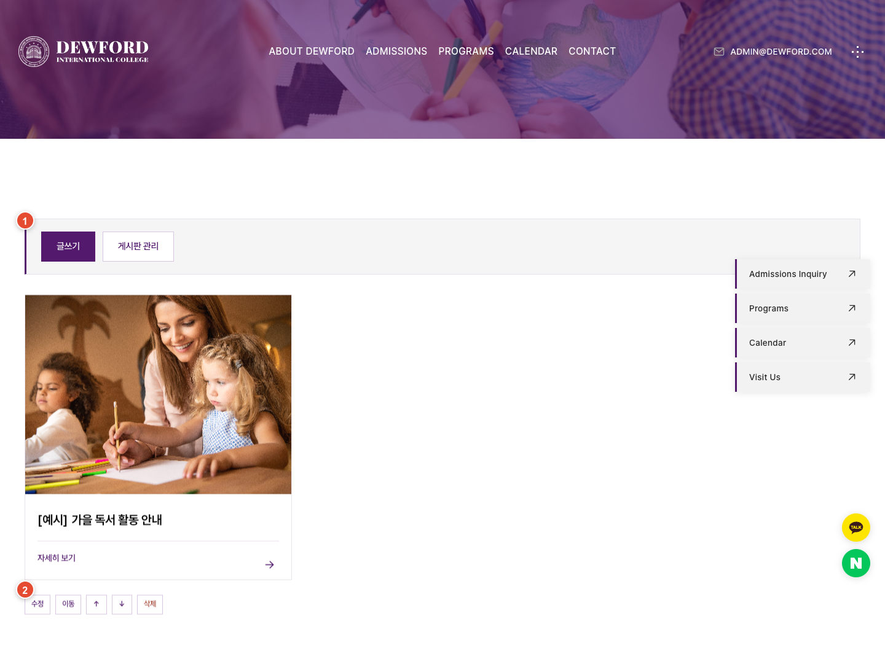
1이벤트 목록 위 글쓰기 버튼은 새 글을 등록할 때 사용합니다. 게시판 관리는 관리자 목록으로 이동하는 버튼입니다.
2각 소식의 수정 버튼은 그 글을 편집합니다. 게시물이 많으면 원하는 글을 먼저 찾아 수정합니다.
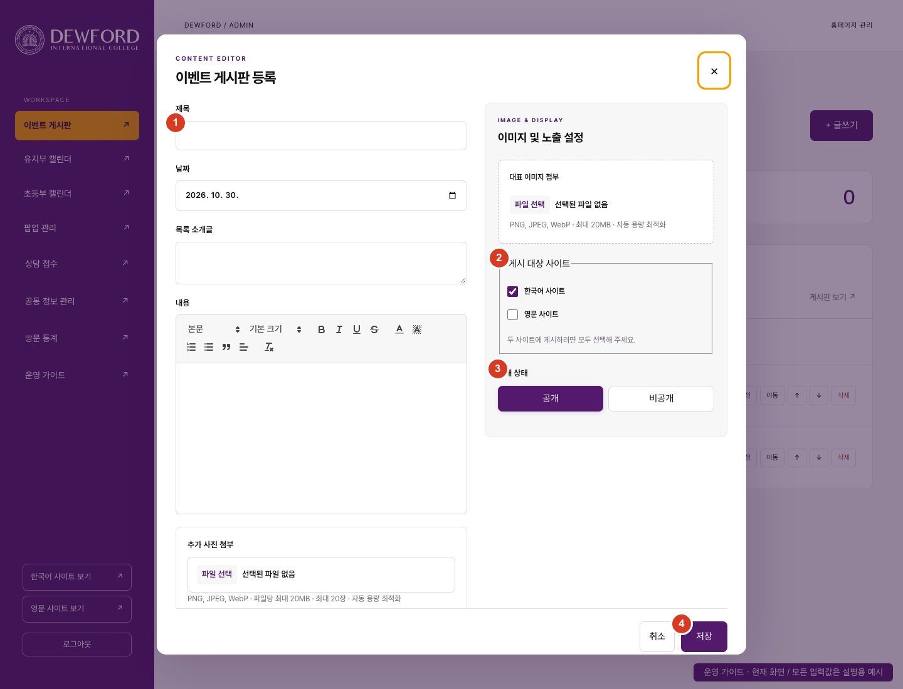
1제목을 누르고 행사 이름을 입력합니다. 왼쪽의 날짜·목록 소개글·내용도 순서대로 채웁니다. 본문 글자를 드래그해 선택한 뒤 B를 누르면 굵게 표시할 수 있습니다.
2게시 대상 사이트: 보여 줄 사이트의 네모에 체크합니다. 새 글은 한국어가 기본 선택이며, 영문에도 올리려면 영문에 추가로 체크하세요.
3공개 상태: 보라색인 버튼이 선택된 상태입니다. 준비 중에는 비공개를 누르고 저장합니다. 게시할 때 다시 수정 창을 열어 공개를 누르고 저장하세요.
4저장: 사진 업로드가 끝난 후 누릅니다. 저장 성공 안내를 보고 창이 닫히면 목록에서 등록된 글을 확인합니다.
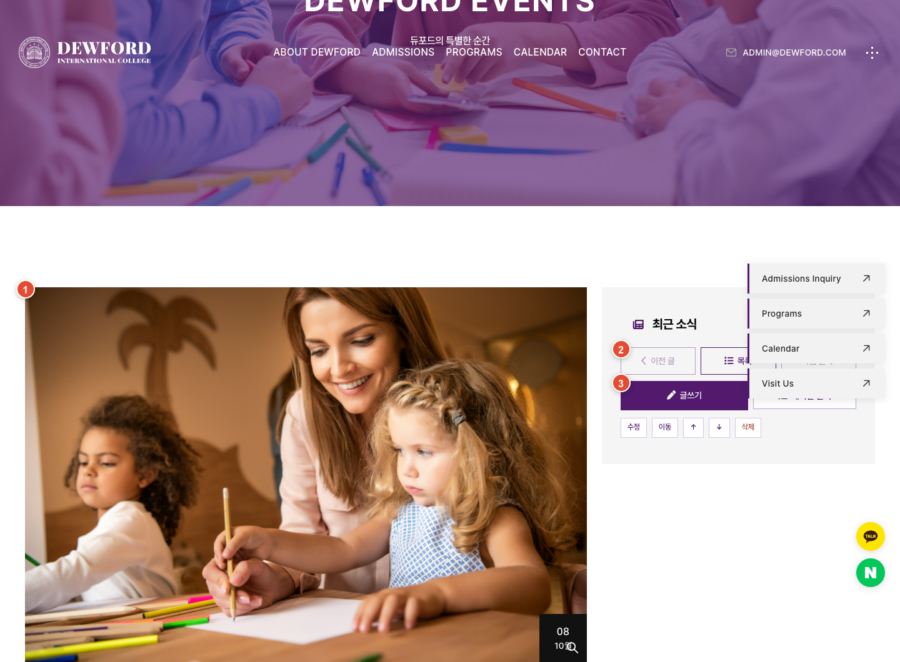
1본문 사진을 누르면 확대 팝업이 열립니다.
2이전 글·목록·다음 글은 방문자용 이동 버튼입니다.
3글쓰기는 새 글 등록이며 게시판 관리는 관리자 목록으로 이동합니다. 그 아래 수정 버튼으로 지금 보고 있는 글을 편집합니다.
사진 교체와 최종 확인
기존 글의 수정 창에서 대표 이미지를 새로 선택하고, 필요 없는 추가 사진은 삭제한 뒤 저장합니다. 저장 후 이벤트 목록과 상세 페이지를 모두 확인해 주세요. 비공개 글은 관리자 목록에는 남아 있지만 공개 홈페이지에서는 표시되지 않습니다.
공개 설정·순서 변경·게시판 이동
- 작성 중 저장: 비공개 버튼을 누르고 저장한 뒤 관리자 목록에서 다시 열어 제목·본문·이미지를 확인합니다. 공개 버튼을 누르고 저장하면 사이트에 반영됩니다.
- 순서 변경: 목록 또는 홈페이지 관리 버튼의 ↑·↓로 표시 순서를 조정합니다.
- 게시판 이동: 이동을 눌러 유치부 또는 초등부 캘린더를 선택하고 표시할 날짜를 지정합니다. 옮긴 뒤 여러 날 일정으로 바꾸려면 캘린더에서 수정해 종료일을 변경합니다.
- 삭제: 제목·건수를 확인한 뒤 삭제합니다. 목록 체크박스로 선택한 여러 글을 삭제할 수 있으며 화면에서 복구하는 기능은 제공하지 않습니다.
컴퓨터에 있는 사진을 첨부하는 순서
- 미리 사용할 사진을 바탕화면 또는 찾기 쉬운 폴더에 모아 둡니다. 대표 사진 한 장과 추가 사진을 구분해 두면 편합니다.
- 대표 이미지 첨부 아래의 파일 선택을 누릅니다. 컴퓨터의 파일을 고르는 창이 열립니다.
- 사진을 저장한 폴더를 열고 원하는 파일 이름을 한 번 누른 뒤 열기를 누릅니다. 브라우저에 따라 파일 선택 버튼의 이름은 조금 다를 수 있습니다.
- 편집 창에 사진 미리보기가 나타날 때까지 기다립니다. 잘못 고른 사진은 이미지 삭제로 첨부를 빼고 다시 선택합니다.
- 추가 사진은 추가 사진 첨부에서 고릅니다. 여러 장을 함께 고르려면 Windows는 Ctrl, Mac은 ⌘를 누른 채 파일을 선택합니다. 추가 사진은 최대 20장입니다.
- 마지막으로 글의 저장을 누릅니다. 홈페이지에서 대표 사진과 추가 사진을 눌러 글씨와 사진이 제대로 보이는지 확인합니다.
06
캘린더 게시판 관리
1. 일정 등록·수정
- 로그인 후 유치부 캘린더 또는 초등부 캘린더를 엽니다. 날짜를 선택하고 글쓰기를 누르면 선택한 날짜로 작성할 수 있습니다.
- 관리자 페이지에서는 해당 캘린더 메뉴의 + 글쓰기를 누릅니다. 기존 일정은 목록 또는 홈페이지 일정 아래의 수정을 누릅니다.
- 제목·카테고리를 입력하고 시작일을 선택합니다. 종료일도 시작일과 같은 날짜로 자동 설정됩니다. 하루 일정은 그대로 둡니다.
- 여러 날 일정이면 종료일만 마지막 날로 변경합니다. 예: 11월 2일~5일은 시작일 11월 2일, 종료일 11월 5일로 지정합니다. 두 날짜가 모두 기간에 포함됩니다.
- 캘린더 표시 색상에서 색상 버튼을 누르거나 직접 선택합니다. 아래 미리보기에서 형광펜 띠의 색을 확인합니다.
- 상세 내용과 필요한 이미지를 입력하고 공개 여부를 확인한 뒤 저장합니다. 해당 월과 기간을 캘린더에서 확인합니다.
2. 기간과 색상 표시 확인
- 선택한 색상은 달력에서 일정 제목 뒤에 표시되는 형광펜 띠에 적용됩니다. 본문 편집기의 글자 배경색과 별도 설정입니다.
- 시작일부터 종료일까지 띠가 이어지고, 일정 제목은 주마다 한 번씩 표시됩니다. 다음 주나 다음 달까지 이어지는 일정도 해당 기간에 계속 표시됩니다.
- 일정이 겹치면 줄을 나눠 표시합니다. 배경색에 맞춰 글자색을 자동 조정하며 사이트 기본 글꼴은 유지합니다.
- 일정 띠를 누르거나 기간 안의 날짜를 선택하면 아래에서 상세 내용을 확인합니다. 기존 하루 일정도 계속 표시됩니다.
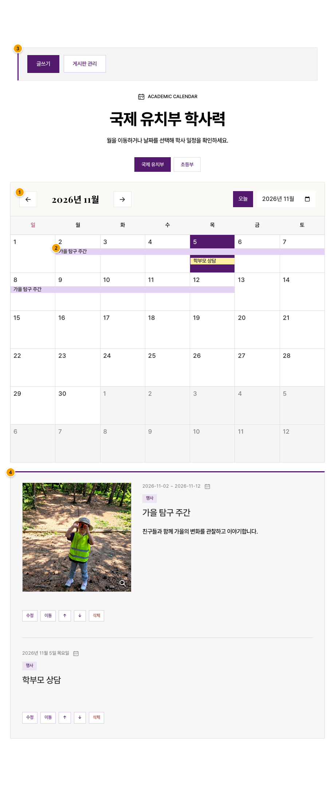
1이전·다음 버튼이나 월 선택기로 확인할 달을 맞춥니다.
2기간 일정은 형광펜 띠와 주별 일정명으로 표시됩니다. 겹치는 하루 일정은 다른 줄에 표시됩니다.
3글쓰기로 새 일정을 등록하거나 게시판 관리에서 목록을 엽니다.
4선택한 날짜의 일정과 전체 기간을 확인합니다. 수정 버튼으로 해당 일정의 날짜·내용·색상을 바꿉니다.
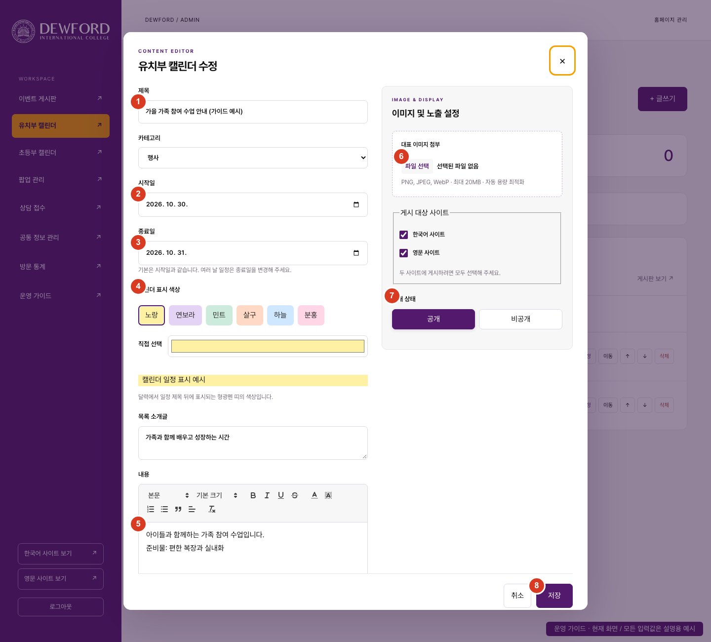
1일정 제목을 입력하고 아래 카테고리를 선택합니다.
2시작일을 선택하면 종료일도 같은 날짜로 자동 설정됩니다.
3여러 날 일정이면 종료일을 마지막 날로 변경합니다.
4캘린더 표시 색상을 선택합니다. 색상 버튼 또는 직접 선택으로 형광펜 색을 정하고 미리보기에서 확인합니다.
5시간·준비물 등 상세 내용을 작성합니다. 편집기의 배경색 도구는 본문 서식에만 적용됩니다.
6필요하면 대표 사진을 첨부합니다. 사진 없이도 일정을 등록할 수 있습니다.
7공개 상태의 공개·비공개 버튼 중 하나를 누릅니다. 준비 중에는 비공개로 저장할 수 있습니다.
8저장을 누르고 실제 캘린더에서 기간과 색상을 확인합니다.
3. 공개 설정·순서 변경·게시판 이동
- 공개/비공개: 준비 중에는 비공개 버튼을 누르고 저장합니다. 내용을 확인한 뒤 공개 버튼을 누르고 다시 저장하면 방문자에게 표시됩니다.
- 순서 변경: 관리자 목록 또는 일정 아래의 ↑·↓로 등록 순서를 조정합니다. 일정이 놓이는 날짜와 기간은 시작일·종료일을 따릅니다.
- 게시판 이동: 이동에서 유치부·초등부 또는 이벤트 게시판을 선택합니다. 다른 캘린더로 옮길 때 새 시작 날짜를 지정하면 기존 기간 길이를 유지해 종료일도 이동합니다. 이벤트 게시판으로 옮기면 하루 소식의 날짜로 표시됩니다.
- 삭제: 삭제 전 제목·건수를 확인합니다. 목록의 체크박스로 여러 일정을 선택해 삭제할 수 있으며, 화면에서 되돌리는 기능은 제공하지 않습니다.
4. 카테고리 관리
카테고리 관리에서 행사, 방학 등의 항목을 추가·수정할 수 있습니다. 이름 변경은 두 캘린더의 해당 일정에 함께 반영됩니다. 카테고리를 삭제해도 일정은 삭제되지 않고 미분류로 남으며, 목록에서 카테고리별로 필터링할 수 있습니다.
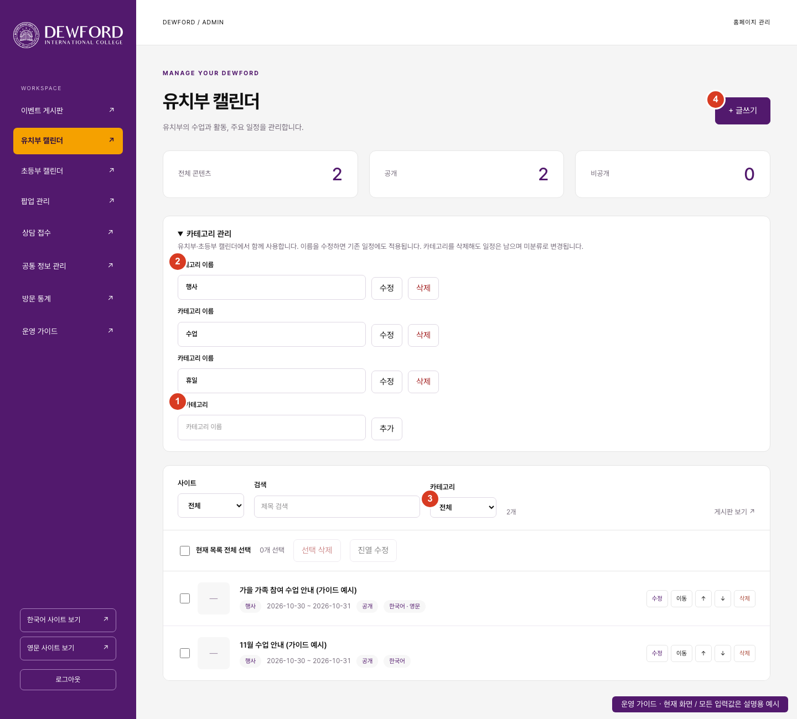
1먼저 ‘카테고리 관리’ 글자를 눌러 펼칩니다. 카테고리 추가 입력란에 예를 들어 ‘방학’을 입력한 뒤 추가 버튼을 누릅니다. 같은 이름을 중복으로 등록할 수는 없습니다.
2기존 이름을 바꾸려면 해당 입력란의 이름을 고친 뒤 바로 옆 수정을 누릅니다. 삭제를 누르면 분류만 없어지고 연결된 일정은 미분류로 남습니다.
3카테고리 상자를 눌러 ‘행사’ 등 원하는 분류만 찾습니다. 전체를 고르면 모든 분류가 다시 표시됩니다.
4+ 글쓰기를 누른 뒤 카테고리 상자에서 등록한 분류를 선택합니다. 시작일·종료일을 정하고 게시 대상 사이트와 공개 상태를 확인한 뒤 저장합니다.
07
이미지 확대 팝업과 사진 첨부
캘린더 일정의 사진과 이벤트 상세 페이지의 대표·추가 사진에는 우측 하단에 돋보기 아이콘이 표시됩니다. 사진을 누르면 확대 팝업이 열립니다.
- 이벤트 상세에 사진이 여러 장이면 좌우 버튼이나 키보드 방향키로 이동합니다. 자동 슬라이드는 사용하지 않습니다.
- 하단 미리보기 사진을 누르면 해당 사진으로 이동합니다. 사진이 많으면 가로로 스크롤할 수 있습니다.
- 우측 상단 × 또는 Esc 키로 닫습니다.
- 사진은 원본 비율을 유지하고 화면보다 클 때만 축소됩니다.
업로드할 사진 준비
PNG·JPEG·WebP 형식, 파일당 최대 20MB를 사용합니다. 추가 사진은 최대 20장입니다. 게시판 사진은 업로드 시 용량과 해상도를 자동 최적화하므로, 글자가 포함된 이미지는 업로드 후 미리보기와 확대 화면에서 읽을 수 있는지 확인하세요.
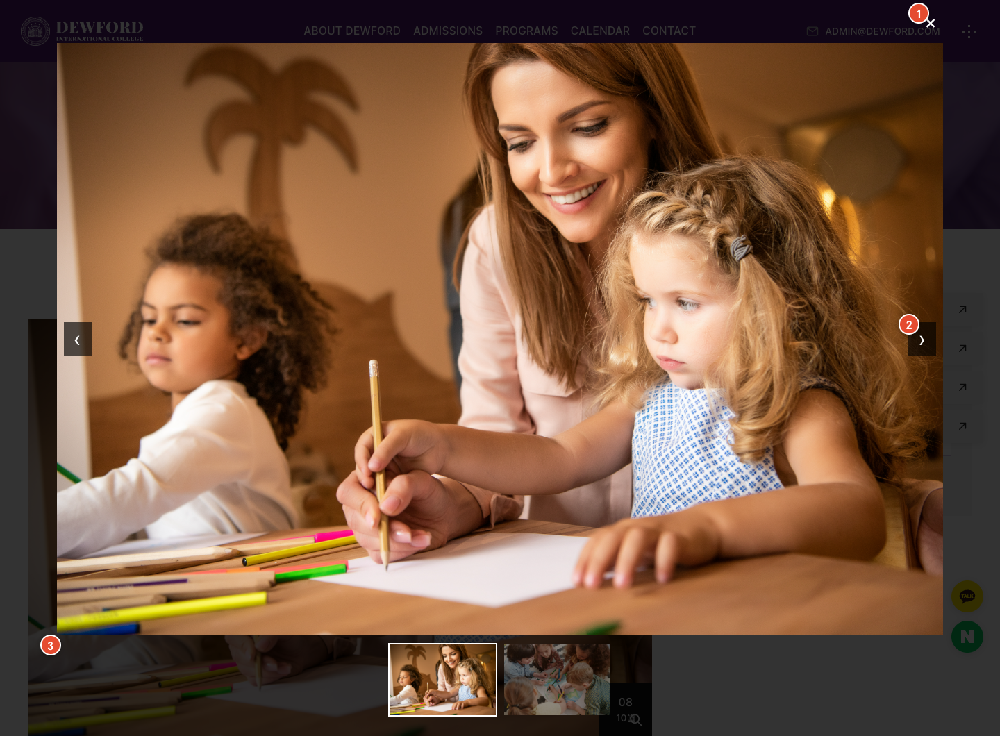
1× 버튼을 누르면 확대 화면을 닫고 원래 글로 돌아갑니다.
2좌우 버튼으로 이전·다음 사진을 봅니다. 사진이 한 장이면 이동 버튼이 없습니다.
3작은 미리보기 사진을 클릭하면 해당 사진으로 바로 이동합니다. 미리보기가 많으면 가로로 스크롤합니다.
캘린더 이미지도 사진을 클릭해 확대할 수 있습니다. 이미지가 흐리면 원본 파일의 해상도를 확인하고 다시 첨부해 주세요. 미리보기의 작게 보이는 크기와 팝업에서 확인하는 실제 크기는 서로 다릅니다.
08
상담 신청과 관리자 확인 방법
방문자가 상담 신청하기
- 홈페이지, Contact 또는 입학상담 페이지의 상담 양식을 엽니다.
- 필수 항목(*)을 입력하고 관심 과정을 선택합니다. 개인정보 수집·이용에 동의합니다.
- 신청 버튼을 누르고 상담 신청이 접수되었습니다 안내를 확인합니다.
관리자가 접수 내역 확인하기
- 상담 접수를 엽니다. 새 접수는 최신순으로 표시됩니다.
- 이름·연락처·과정·상담 내용으로 검색하거나 새로고침합니다.
- 타이틀을 눌러 상세 팝업에서 연락처와 신청 내용을 확인합니다.
- 상세 팝업의 상담 단계를 접수 / 진행중 / 완료 중에서 선택하고 상태 변경을 누릅니다.
일괄 처리와 엑셀 다운로드
- 행의 체크박스로 상담을 선택합니다. 상단 체크박스는 현재 페이지 전체를 선택합니다.
- 상단 셀렉트 박스에서 상태를 고르고 상태 일괄 변경을 누르면 선택한 상담만 변경됩니다.
- 일괄 삭제는 선택한 상담만 삭제합니다. 행 오른쪽 삭제 버튼은 해당 상담 한 건을 삭제합니다.
- 엑셀 다운로드: 선택한 상담이 있으면 선택 내역만, 없으면 검색 조건과 관계없이 전체 내역을 받습니다. 파일은 Excel에서 열 수 있는 XML 형식입니다.
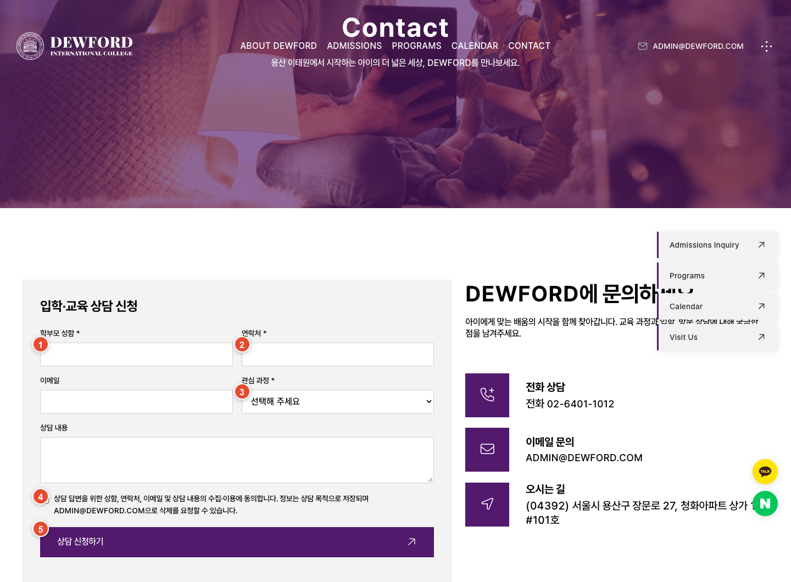
1학부모 성함을 입력합니다.
2연락 가능한 번호를 입력합니다.
3관심 과정을 선택하고 이메일·상담 내용을 필요한 만큼 입력합니다.
4개인정보 수집·이용 동의에 체크합니다. 동의하지 않으면 접수되지 않습니다.
5신청 버튼을 누르고 접수 성공 안내를 기다립니다. 오류 안내가 보이면 접수가 완료된 것으로 보지 않습니다.
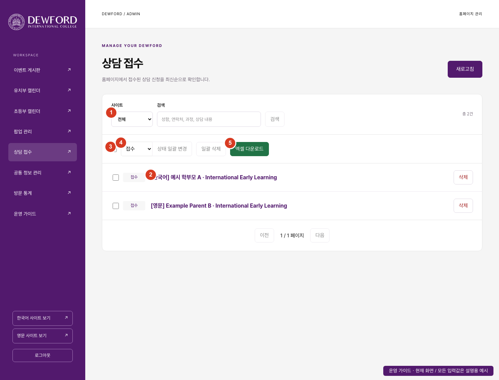
1사이트에서 전체·한국어·영문을 고르고 이름 또는 연락처를 입력한 뒤 검색을 누릅니다. 전체 상담으로 돌아오려면 사이트를 전체로 바꾸고 검색어를 지운 뒤 검색합니다.
2신청자 이름을 누르면 상세 창이 열립니다. 제목 앞 [한국어]·[영문]과 상세의 접수 사이트로 신청한 언어 사이트를 구분합니다.
3맨 위 네모는 현재 페이지의 상담만 모두 선택합니다. 여러 페이지가 있으면 아래 이전·다음으로 이동할 수 있으며 새 목록을 불러오면 선택이 해제됩니다.
4상태 목록에서 접수·진행중·완료를 고르고 상태 일괄 변경을 누릅니다. 상태 이름만 고르면 저장되지 않습니다. 체크한 신청자만 바뀝니다.
5엑셀 다운로드는 선택한 상담이 있으면 선택 내역만 받습니다. 아무 것도 선택하지 않으면 사이트·검색 조건과 관계없이 전체 상담을 받으므로 선택 여부를 먼저 확인하세요.
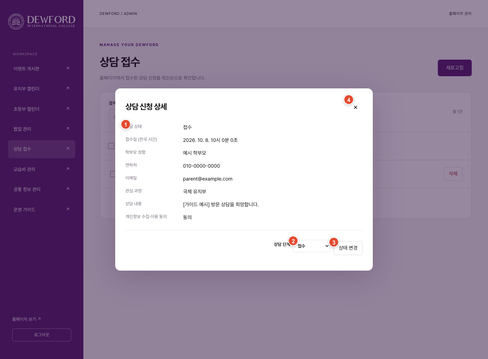
1성함·연락처·과정·신청 내용과 접수일을 읽고 필요한 연락을 진행합니다.
2상담 단계를 선택합니다. 새 신청은 접수, 연락·상담 진행 중이면 진행중, 처리가 끝났다면 완료로 구분해 관리할 수 있습니다.
3상태 변경 버튼을 눌러 저장합니다. 셀렉트 박스에서 고르기만 하면 저장된 상태가 바뀌지 않습니다.
4×를 눌러 목록으로 돌아갑니다.
엑셀 파일을 열 때
다운로드된 파일은 XML 확장자를 사용합니다. Microsoft Excel의 파일 열기에서 해당 파일을 선택하면 표로 볼 수 있습니다. 전화번호 앞의 0을 유지하도록 문자열로 저장됩니다. 상담 개인정보가 있으므로 파일을 공개 게시판에 첨부하지 말고 업무에 필요한 범위에서만 사용하세요.
따라 하기: 새 신청 한 건을 확인하고 진행중으로 바꾸기
- 상담 접수 화면 오른쪽 위 새로고침을 누릅니다. 위쪽에 있는 새 신청자의 이름을 누릅니다.
- 상세 창에서 접수 사이트·성함·연락처·관심 과정·상담 내용을 확인합니다. 전화번호는 가이드 그림이 아닌 실제 접수 정보로 확인하세요.
- 연락을 시작했다면 아래 상담 단계에서 진행중을 고르고 상태 변경을 누릅니다. 완료 안내가 나오면 ×를 눌러 닫습니다.
- 목록에서 해당 신청자의 상태가 진행중으로 표시되는지 확인합니다. 상담 처리가 끝나면 같은 방법으로 완료로 바꿉니다.
엑셀 파일을 찾는 방법
엑셀 다운로드를 누르면 브라우저가 파일을 컴퓨터에 저장합니다. 저장 위치를 묻는 창이 나오면 찾기 쉬운 폴더를 고릅니다. 별도 창이 없으면 보통 ‘다운로드’ 폴더에 있습니다. 내려받은 XML 파일을 Excel의 파일 열기로 열어 확인하세요. 연락처의 앞자리 0과 접수 사이트가 포함됩니다.
09
홈페이지 팝업 관리
- 관리 메뉴에서 팝업 관리를 엽니다.
- 팝업 등록 또는 기존 항목의 수정으로 이미지를 첨부합니다.
- 필요한 경우 이미지 클릭 시 이동할 주소, PC 팝업 폭, 노출 시작·종료 시간을 지정합니다. 노출 시간은 한국 시간 기준입니다.
- 게시 대상 사이트를 선택하고, 공개 버튼과 팝업 사용 체크를 확인한 뒤 저장합니다.
- 홈페이지에서 표시를 확인합니다. 오늘 하루 보지 않기를 선택했다면 해당 브라우저에서는 바로 보이지 않을 수 있으므로 다른 브라우저나 시크릿 창에서도 확인합니다.
노출 기간에 해당하는 공개·사용 중 팝업이 표시됩니다. 이미지가 여러 개면 자동으로 전환되며, 이전·다음 버튼과 모바일 스와이프도 사용할 수 있습니다.
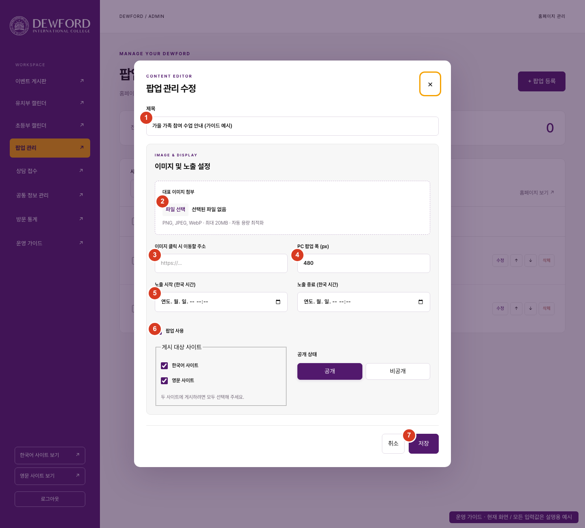
1관리용 제목을 입력합니다. 팝업에 보여 줄 안내 글은 첨부하는 이미지 안에 작성해 준비합니다.
2팝업 이미지를 선택합니다. 사진 또는 안내 이미지를 첨부하고 미리보기를 확인합니다.
3클릭 시 이동할 주소가 필요하면 전체 URL을 넣습니다. 연결할 페이지가 없다면 빈칸으로 둡니다.
4PC 표시 폭을 숫자로 입력합니다. 작은 화면에서는 화면 크기에 맞게 제한됩니다.
5한국 시간으로 노출 시작·종료 일시를 지정합니다. 기간이 지난 팝업은 표시되지 않습니다.
6팝업 사용에 체크하고 공개 버튼을 선택합니다. 게시 대상 사이트와 노출 기간도 맞아야 표시됩니다.
7저장을 누른 뒤 홈페이지에서 결과를 확인합니다.
운영 중인 팝업을 잠시 숨길 때는 삭제하기보다 팝업 사용 체크를 해제하거나 비공개 버튼을 누르고 저장할 수 있습니다. 다음에 같은 내용을 다시 사용할 계획이면 항목을 남겨 두는 편이 관리하기 쉽습니다.
공개 설정·표시 순서·삭제
- 공개/팝업 사용: 공개 버튼이 선택되고 팝업 사용에 체크되어 있고 노출 기간에 해당해야 표시됩니다. 작성 중이거나 잠시 숨길 때는 비공개를 선택하거나 팝업 사용 체크를 해제하고 저장합니다.
- 표시 순서: 관리자 목록의 ↑·↓로 팝업의 전환 순서를 조정합니다.
- 삭제: 다시 사용할 예정이면 사용을 해제해 보관할 수 있습니다. 삭제할 때는 제목을 확인하며, 삭제 후 화면에서 복구하는 기능은 제공하지 않습니다.
- 팝업은 이벤트·캘린더 게시판으로 이동할 수 없습니다.
따라 하기: 11월 1일 오전 9시부터 7일 오후 6시까지만 표시하기
- 팝업 등록을 누르고 구분하기 쉬운 제목과 안내 이미지를 넣습니다. 이미지가 없으면 저장할 수 없습니다.
- 노출 시작을 2026년 11월 1일 09:00, 노출 종료를 2026년 11월 7일 18:00으로 지정합니다. 오전·오후 표시 방식이면 오전 9시와 오후 6시인지 다시 확인합니다.
- 게시 대상 사이트에서 보여 줄 곳을 선택하고 공개 버튼과 팝업 사용 체크를 확인합니다.
- 저장을 누릅니다. 시작 시간 전에는 보이지 않고, 기간이 끝나면 자동으로 내려갑니다. 시작·종료를 비워 두면 해당 시간 제한 없이 사용합니다.
- 기간 안인데도 안 보이면 ‘오늘 하루 보지 않기’를 누른 브라우저인지 확인합니다. 다른 브라우저나 시크릿 창으로 해당 언어 사이트의 홈을 열어 확인합니다.
현재 사이트에 표시되는 팝업이 한 장이면 고정 표시되며, 여러 장이면 5초 간격으로 바뀝니다. ‘오늘 하루 보지 않기’는 그 슬라이드에 포함된 팝업 전체에 적용됩니다. 팝업 이미지가 두 언어에서 다르면 언어별로 따로 등록하세요.
10
학원 공통 정보·SNS 링크 변경
- 공통 정보 관리를 엽니다.
- 한국어 사이트 학원 정보와 영문 사이트 학원 정보에서 학원이름, 연락처, 이메일, 주소, 학원등록번호를 각각 수정하고, 두 사이트가 함께 사용하는 SNS 링크 관리에서 카카오톡·네이버 톡톡·인스타그램·페이스북 주소를 입력합니다.
- 저장 후 홈페이지를 새로고침합니다.
- 푸터와 연락처 안내에서 공통 정보가 변경되었는지 확인하고, 플로팅·SNS 상담 버튼을 눌러 의도한 채널이 열리는지 확인합니다.
카카오톡은 kakao.com, 네이버 톡톡은 naver.com, 인스타그램은 instagram.com, 페이스북은 facebook.com 계열의 전체 주소를 사용합니다. 저장한 설정은 사이트 내 상담 버튼에 공통 적용됩니다.
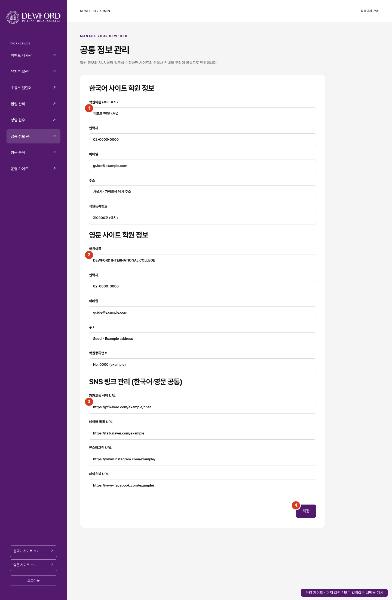
1위쪽 한국어 사이트 학원 정보에 한국어 학원명·연락처·이메일·주소·등록번호를 입력합니다.
2아래쪽 영문 사이트 학원 정보도 각각 확인합니다. 한국어 정보를 바꿔도 이 입력란이 자동 번역되거나 자동으로 바뀌지는 않습니다.
3SNS 링크는 두 사이트가 함께 씁니다. 실제 채널 또는 프로필 주소를 인터넷 주소창에서 복사해 붙여 넣으세요. 그림의 example 주소는 설명용입니다.
4페이지를 아래로 내려 저장을 누릅니다. ‘저장했습니다. 사이트의 공통 정보에 적용됩니다.’ 안내가 나오면 두 사이트를 새로고침해 확인합니다.
링크는 어디서 가져오나요?
카카오톡 채널·네이버 톡톡 상담 URL 또는 인스타그램·페이스북 프로필 주소를 복사합니다. 이름이나 아이디만 입력하는 것이 아니라 https://…로 시작하는 전체 주소를 넣어야 합니다. 저장 후 버튼을 눌러 실제 상담 채널이 열리는지 확인하는 단계까지 진행해 주세요.
방문 상담과 SNS 안내에 반영되는 정보
- Apply Now 페이지의 방문 상담 안내 아래에는 전화번호와 듀포드 카카오톡 링크가 나란히 표시됩니다. 아이콘과 텍스트 모두 연결됩니다.
- 관리자에서 연락처를 변경하면 방문 상담 안내와 푸터의 전화번호 및 전화 연결 주소가 함께 바뀝니다.
- 이메일 아래 ‘듀포드의 일상을 만나보세요.’에는 인스타그램·페이스북 아이콘이 표시됩니다. 저장한 SNS 주소는 이 아이콘과 푸터 아이콘에 함께 적용됩니다.
- 푸터 SNS 아이콘은 한 줄로 표시되며, 공간이 좁은 화면에서는 3개·2개로 나뉩니다.
- 저장 후 페이지를 새로고침하고 각 아이콘을 눌러 연결되는 프로필을 확인합니다. 서비스 이름이나 아이디만 입력하지 말고 전체 URL을 넣어 주세요.
SNS 주소 입력 예시
- 인스타그램: https://www.instagram.com/dewfordcoltd/
- 페이스북: https://www.facebook.com/profile.php?id=61595122751751
실제 링크는 관리자에서 마지막으로 저장한 설정을 따릅니다. 다른 서비스의 도메인 주소는 저장할 수 없습니다.
SNS 주소 복사·붙여넣기 순서
- 다른 탭에서 학원의 실제 SNS 프로필 또는 상담 채널을 엽니다. 개인 계정 프로필과 혼동하지 않도록 이름을 확인합니다.
- 브라우저 맨 위 주소창을 누릅니다. Windows는 Ctrl+C, Mac은 ⌘+C로 전체 주소를 복사합니다.
- 관리자 탭으로 돌아와 해당 SNS 입력란을 누릅니다. Windows는 Ctrl+A 후 Ctrl+V, Mac은 ⌘+A 후 ⌘+V로 주소를 바꿉니다.
- https://로 시작하는 전체 주소인지 확인하고 저장합니다. 두 사이트의 푸터 아이콘을 직접 눌러 올바른 채널이 열리는지 확인합니다.
11
방문 통계 확인과 집계 기준
홈페이지 이용 현황은 관리자 메뉴의 방문 통계에서 확인합니다. 오늘·이번 달 요약과 최근 7일·30일·90일의 일별 방문자, 페이지별 조회수, 기기별 조회 비율을 제공합니다. 방문 통계는 조회 전용이며 별도로 저장 버튼을 누를 필요가 없습니다.
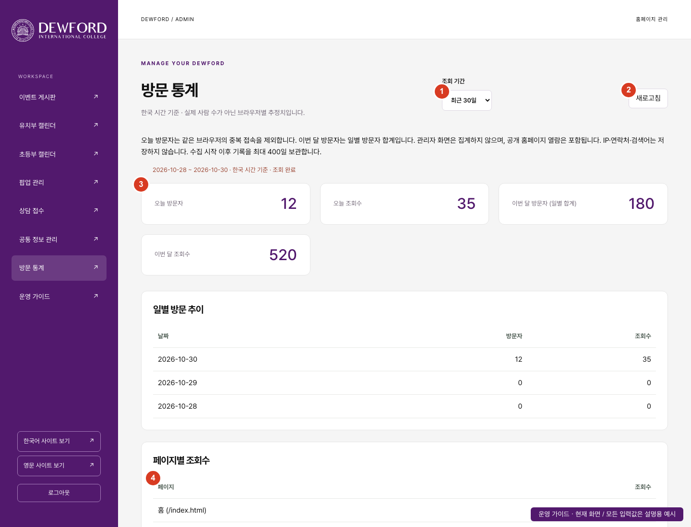
1조회 기간에서 최근 7일·30일·90일 중 하나를 고릅니다. 아래 상세 표가 선택 기간으로 바뀝니다.
2새로고침은 최신 기록을 다시 가져오는 버튼입니다. 방문 통계에는 별도의 저장 버튼이 없습니다.
3오늘과 이번 달의 요약 숫자입니다. 방문자는 같은 날 같은 브라우저의 중복을 제외하며 조회수는 페이지가 열린 횟수입니다. 이번 달 방문자는 일별 방문자의 합계입니다.
4페이지별 조회수에서 자주 열린 페이지를 확인합니다. /en/으로 시작하는 주소는 영문 페이지입니다. 그림의 수치는 가이드용 예시입니다.
1. 방문 통계 화면 여는 방법
- 운영 사이트의 관리자 계정으로 로그인합니다.
- 왼쪽 메뉴에서 방문 통계를 선택합니다. 모바일에서는 화면 상단의 관리 메뉴에서 찾습니다. 이 가이드의 방문 통계 링크로도 열 수 있으며, 로그아웃 상태라면 먼저 로그인해야 합니다.
- 상단에서 오늘·이번 달의 방문자와 조회수를 확인합니다.
- 조회 기간에서 최근 7일·30일·90일 중 하나를 선택합니다. 기본값은 최근 30일이며, 선택하면 아래 세부 표를 다시 불러옵니다.
- 최신 기록을 보고 싶으면 새로고침을 누릅니다. 조회 완료 안내의 기간과 ‘한국 시간 기준’ 문구를 확인합니다.
화면은 자동으로 계속 갱신되지 않습니다. 다른 사람이 홈페이지에 접속한 뒤에도 화면이 그대로라면 새로고침을 눌러 최신 값을 불러오세요. 상단 요약은 항상 오늘·이번 달 기준이며, 조회 기간을 바꾸어도 해당 요약의 기준은 바뀌지 않습니다.
2. 상단 요약 숫자의 뜻
| 표시 항목 | 계산 방법 | 읽는 방법과 예시 |
|---|---|---|
| 오늘 방문자 | 한국 시간 오늘 날짜에 기록된 브라우저 식별자의 중복을 제외합니다. 같은 브라우저로 여러 페이지를 보아도 오늘 방문자는 원칙적으로 1명입니다. | 같은 브라우저로 홈·이벤트·입학상담을 각각 한 번 열면 오늘 방문자 1명, 조회수 3회입니다. |
| 오늘 조회수 | 오늘 공개 페이지를 열어 방문 기록 저장에 성공한 횟수의 합계입니다. 페이지 새로고침도 기록이 새로 전송되면 포함됩니다. | 한 사람이 같은 페이지를 여러 번 열면 방문자 수보다 조회수가 커집니다. 사진·CSS 같은 파일 요청 횟수를 합산하는 수치는 아닙니다. |
| 이번 달 방문자 (일별 합계) | 이번 달 1일부터 오늘까지 매일의 중복 제거 방문자를 더합니다. | 같은 브라우저가 월요일과 화요일에 방문하면 이번 달 합계에는 2명으로 더해집니다. 월간 실제 이용자 수로 보고하지 마세요. |
| 이번 달 조회수 | 이번 달 1일부터 오늘까지 저장된 공개 페이지 조회수의 합계입니다. | 월이 바뀌면 새 달 기준으로 표시됩니다. 월 중간에 수집을 시작했다면 그 이후에 저장된 기록만 포함됩니다. |
3. 최근 7일·30일·90일 세부 표 읽기
- 기간 기준: 오늘을 포함한 최근 날짜 범위입니다. 예를 들어 10월 29일에 최근 7일을 선택하면 10월 23일~29일을 조회합니다. 하루는 한국 시간 00:00부터 다음 날 00:00 전까지입니다. 오늘의 수치는 하루가 끝나기 전까지 계속 달라질 수 있습니다.
- 일별 방문 추이: 날짜별 방문자와 조회수를 표시하며 최신 날짜가 위에 나옵니다. 기록이 없는 날짜는 0으로 표시됩니다. 여러 날짜의 방문자를 더해도 기간 전체의 중복 제거 이용자가 되지는 않습니다.
- 페이지별 조회수: 선택한 기간의 조회수를 페이지 주소별로 합산하며 조회수가 많은 순서로 표시합니다. 홈은 ‘홈 (/index.html)’로 표시됩니다. 주소를 비교해 어떤 안내 페이지가 자주 열렸는지 확인합니다.
- 페이지 구분의 한계: 주소의 물음표 뒤 값은 저장하지 않습니다. 예를 들어
event.html?id=...형태로 연 서로 다른 이벤트도 모두/event.html에 합산됩니다. 현재 통계로 개별 이벤트 글이나 광고 캠페인별 성과를 구분할 수는 없습니다. - 기기별 조회 비율: 선택한 기간의 전체 조회수 중 ‘모바일·태블릿’과 ‘PC’가 차지한 비율입니다. 방문자 비율이 아니라 조회수 비율이며, 브라우저가 보내는 기기 정보로 분류하므로 실제 기기와 다를 수 있습니다.
- 반올림: 기기별 비율은 소수점 첫째 자리로 표시합니다. 반올림으로 합계가 정확히 100%가 되지 않을 수 있습니다.
선택 기간의 일별 조회수 합계, 페이지별 조회수 합계, 기기별 조회수 합계는 같은 기간의 조회 기록을 다른 기준으로 묶은 값입니다. 기록이 계속 추가되는 중에는 새로고침 시점에 따라 숫자가 조금 다를 수 있습니다. 기간을 최근 7일로 설정한 표의 합계와 ‘이번 달 조회수’를 그대로 비교하지 마세요.
4. 어떤 접속이 포함되나요?
| 접속 상황 | 집계 방식 |
|---|---|
| 같은 브라우저로 오늘 여러 번 접속 | 오늘 방문자는 원칙적으로 1명, 조회수는 기록된 열람 횟수만큼 증가합니다. |
| 한 사람이 휴대폰과 PC로 접속 | 브라우저 식별자가 다르므로 각각 별도 방문자로 집계될 수 있습니다. 같은 기기라도 서로 다른 브라우저를 사용하면 별도로 집계됩니다. |
| 여러 사람이 같은 브라우저를 함께 사용 | 같은 날에는 한 방문자로 묶일 수 있습니다. |
| 같은 사람이 다음 날 다시 방문 | 한국 시간 날짜가 바뀌면 새로운 일별 식별자를 사용하므로 다음 날 방문자에 다시 포함됩니다. |
| 관리자가 관리자 페이지를 열기 | 게시판 관리, 상담 접수, 방문 통계, 운영 가이드 등 관리자 화면은 집계하지 않습니다. 통계 화면의 새로고침도 공개 페이지 조회수에 포함되지 않습니다. |
| 관리자가 공개 홈페이지를 열기 | 로그인 여부와 관계없이 일반 방문과 같이 집계합니다. 직원의 검수·미리보기 접속을 별도로 빼는 기능은 없습니다. |
| 사이트 저장 데이터 삭제·시크릿 창 사용 | 기존 식별자가 사라지거나 별도로 생성되어 같은 사람이 추가 방문자로 잡힐 수 있습니다. 브라우저 저장소 사용이 차단되면 페이지를 열 때마다 별도 방문자로 잡힐 수도 있습니다. |
| 백그라운드 탭에서 페이지 열기 | 화면이 실제로 보이는 상태가 되었을 때 기록 전송을 시도합니다. 단순히 탭을 다시 선택한다고 매번 조회수가 추가되는 구조는 아닙니다. |
| 검색 봇·자동 접속 | 알려진 봇 식별 문구가 있는 요청은 일부 제외합니다. 모든 봇을 완벽하게 구분하지는 못하므로 자동 접속이 포함될 수 있습니다. |
5. 통계로 확인할 수 있는 범위
방문 통계는 홈페이지 이용량과 페이지 관심도의 변화를 파악하는 참고 자료입니다. 실제 사람 수, 정확한 학부모 수, 입학 희망자 수, 상담 신청 수와 같은 의미로 해석하지 마세요. 신청 내용과 접수 건수는 별도의 상담 접수 메뉴에서 확인합니다.
- 현재 화면은 체류 시간, 실시간 접속 중인 인원, 유입 검색어, 광고별 전환, 버튼 클릭 수를 제공하지 않습니다.
- JavaScript 실행 차단, 추적 차단, 네트워크 오류, DB 장애 등으로 기록이 누락될 수 있습니다. 화면을 본 것과 방문 기록 저장에 성공한 것은 다를 수 있습니다.
- 브라우저의 뒤로 가기에서 저장된 화면을 복원하는 등 페이지가 새로 실행되지 않는 경우에는 새 조회 기록이 생기지 않을 수 있습니다.
- Cloudflare의 요청 수는 이미지·파일·API 요청과 봇 등을 포함할 수 있고 측정 방식도 달라, 이 화면의 방문자·조회수와 일치하지 않을 수 있습니다.
- 보고할 때는 ‘최근 30일 페이지 조회수’ 또는 ‘이번 달 일별 방문자 합계’처럼 기간과 지표 이름을 함께 적어 주세요. 같은 기준의 기간끼리 비교하면 추이를 이해하기 쉽습니다.
6. 수집 시작 시점과 보관 정보
방문 기록 수집 기능과 운영 DB가 정상 적용된 이후, 기록 저장에 성공한 접속부터 집계됩니다. 적용 전 접속이나 오류로 저장되지 않은 접속은 나중에 소급해서 채워지지 않습니다. 기록이 0이라고 해서 수집 시작 전에도 접속자가 전혀 없었다는 뜻은 아닙니다.
브라우저에는 한국 시간 하루 단위로 교체되는 무작위 식별자를 저장합니다. 통계 DB에는 날짜, 일별 무작위 식별자, 공개 페이지 경로, 기기 구분, 조회수를 저장하며, IP 주소·이름·연락처·검색어·주소의 쿼리 문자열은 이 방문 통계 기록에 저장하지 않습니다. 상담 신청 데이터는 방문 통계와 별도로 관리합니다.
기록 보관 기준은 최대 약 400일입니다. 새 방문 기록을 저장할 때 400일보다 오래된 날짜의 기록을 삭제하므로, 접속이 없는 동안에는 정리가 다음 기록 저장 시점까지 지연될 수 있습니다. 현재 화면에서 선택할 수 있는 세부 조회 기간은 최근 7일·30일·90일이며, 통계 다운로드나 개별 기록 수정·삭제 메뉴는 제공하지 않습니다.
7. 정상 수집 여부 확인하기
- 방문 통계에서 오늘 방문자와 조회수를 확인합니다.
- 관리자 메뉴의 한국어 사이트 보기 또는 영문 사이트 보기로 공개 홈을 열고 페이지가 보이는 상태에서 로딩이 끝날 때까지 기다립니다.
- 방문 통계로 돌아와 새로고침을 누릅니다. 정상적으로 저장되었다면 오늘 조회수와 홈 페이지 조회수가 증가합니다. 이미 오늘 사용한 브라우저라면 오늘 방문자는 그대로일 수 있습니다.
- 공개 홈을 한 번 새로고침하고 통계를 다시 조회하면 조회수가 추가로 증가할 수 있습니다. 다른 방문도 함께 발생할 수 있으므로 반드시 정확히 1만 늘어야 하는 것은 아닙니다.
- 점검용 공개 페이지 열람도 실제 통계에 포함됩니다. 숫자를 확인하려고 반복 접속하면 점검 접속만큼 조회수가 늘어납니다.
8. 방문 통계에 문제가 있을 때
| 상황 | 확인·대응 방법 |
|---|---|
| ‘통계를 불러오지 못했습니다’ 안내 | 통계 화면의 새로고침을 누르고 로그인 상태와 네트워크를 확인합니다. 계속 발생하면 사이트 담당자에게 화면 주소·오류 문구·발생 시각을 전달합니다. 안내 문구만으로 DB 테이블 누락을 확정할 수는 없으며 서버 오류 확인이 필요합니다. |
| DB 통계 마이그레이션 안내가 계속 표시됨 | 담당자가 운영 DB의 통계 테이블 적용과 서버 배포 상태를 확인해야 합니다. 운영자는 관리자 화면에서 해결할 수 없으며 게시글이나 상담 내역을 삭제해도 해결되지 않습니다. |
| 로그인 페이지로 이동함 | 로그인 유지 시간이 지났을 수 있습니다. 다시 로그인한 뒤 방문 통계를 엽니다. |
| 0 또는 ‘수집된 방문 기록이 없습니다’ 표시 | 선택한 기간과 수집 시작 시점을 확인하고, 공개 홈페이지를 연 뒤 통계에서 새로고침합니다. 계속 0이면 브라우저 차단 설정과 운영 서버의 기록 저장 상태를 담당자에게 확인 요청합니다. |
| 오늘 방문자가 늘지 않는데 조회수만 증가함 | 같은 브라우저의 당일 재방문은 중복을 제외하므로 정상적인 동작일 수 있습니다. |
| 조회 기간을 바꾸어도 상단 숫자가 같음 | 상단은 오늘·이번 달 고정 요약입니다. 기간 선택은 아래의 일별·페이지별·기기별 표에 적용됩니다. |
| 숫자가 예상보다 많거나 다른 통계와 다름 | 직원의 공개 페이지 검수, 새로고침, 여러 기기·브라우저 사용, 자동 접속 여부와 비교하는 기간·시간대·지표를 확인합니다. 방문자와 조회수를 혼동하지 않았는지도 확인합니다. |
문의 시에는 선택한 조회 기간, 조회 완료 안내, 이상한 항목의 이름과 수치, 마지막 확인 시각을 함께 전달해 주세요. 비밀번호나 상담 신청자의 개인정보는 보내지 않아도 됩니다.
12
문제가 생겼을 때
| 상황 | 확인할 내용 |
|---|---|
| 홈페이지에서 관리 버튼이 안 보여요 | 같은 운영 사이트에 로그인했는지 확인하세요. 로그인 유지 시간이 지났다면 다시 로그인합니다. |
| 저장한 글이 안 보여요 | 저장 성공 안내, 공개 여부, 게시 대상 사이트, 게시판 종류와 날짜를 확인하고 새로고침합니다. 진열 수정에서 두 사이트를 모두 해제했는지도 확인하세요. 팝업은 사용 여부와 노출 기간도 확인합니다. |
| 상담 내역을 불러오지 못해요 | 새로고침 후에도 동일하면 사이트 담당자에게 화면 주소와 오류 문구를 전달합니다. DB 연결 또는 업데이트 확인이 필요할 수 있습니다. |
| 사진 업로드에 실패했어요 | 지원 형식·파일 용량·네트워크를 확인합니다. 저장 공간 관련 오류는 담당자에게 문의합니다. |
| 변경 내용 충돌 안내가 떠요 | 다른 화면에서 먼저 저장하면 최신 내용으로 다시 불러옵니다. 같은 글을 여러 탭에서 동시에 편집하지 말고, 최신 내용을 확인한 뒤 다시 저장합니다. |
| 신청이 접수되지 않았다고 나와요 | 성공 안내 없이 접수가 끝난 것으로 간주하지 마세요. 잠시 후 재시도하거나 전화로 안내합니다. |
관리할 때 함께 확인하기
- 글·일정을 등록한 뒤 PC와 모바일에서 제목, 사진, 날짜를 확인합니다.
- 상담 신청은 개인정보가 포함되어 있으므로 다운로드 파일은 필요한 담당자에게만 전달합니다.
- 공용 컴퓨터에서는 작업 후 로그아웃하고 내려받은 상담 파일도 정리합니다.
담당자에게 문의할 때 보내면 좋은 정보
문제가 생긴 페이지의 주소, 눌렀던 버튼, 화면에 표시된 오류 문구, 발생 시각과 PC·휴대폰 여부를 함께 전달하면 원인 확인에 도움이 됩니다. 캡처에는 비밀번호나 상담 신청자의 개인정보가 불필요하게 노출되지 않도록 가려 주세요.